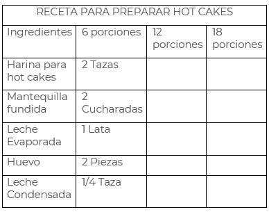

Experiencias

¿Qué vimos hoy?


Matemáticas
Martes 21 de Abril
Analicen las siguientes situaciones de variación proporcional directa y construyan una tabla en su cuaderno.
- Para hacer una instalación se requiere comprar cable. Sólo hay carretes de 20 m que cuestan $240.00 Haz una tabla en la que pongas los costos de 1, 10, 15 y 25 metros de cable.
- Un vehículo avanza 30 km cada 20 minutos. Construye una tabla en donde se observe el tiempo que le tomará recorrer 320, 450 y 710 kilómetros si continúa a la misma velocidad.
Resuelve la siguiente tabla utilizando la variación proporcional directa

Plantea una situación en la que haya dos cantidades cuya relación sea de variación directamente proporcional. Construye una tabla con más valores que ejemplifiquen la situación y justifica que la tabla que construiste corresponde a la variación proporcional directa
Guarda tus trabajos en tu carpeta de experiencias para que, en cuanto se pueda, se los enseñes a tu maestra o maestro.
Video 1.- Diferentes mezclas
https://youtu.be/DYlP7b8v6c0
Video 2.- Variación proporcional directa
https://youtu.be/FBaah2-LdfY
Geografía
Martes 21 de Abril
Responde en tu cuaderno las siguientes preguntas:
- ¿Qué diferencias notas entre la agricultura convencional y la digital?
- ¿Cuáles son los beneficios de practicar agricultura digital?
- ¿Qué componentes del espacio geográfico identificaste en el video?
Video 1.- Agricultura y ganadería.
https://youtu.be/vjJ99RYzRKs
Video 2.- Agricultura digital.
https://youtu.be/kostS2ZYg1c
Video 3.- Los recursos pesqueros.
https://youtu.be/DypZPGR1rjU
Biología
Martes 21 de Abril
Dialoga con tu familia, compárteles lo que has aprendido y juntos respondan a las siguientes preguntas:
- Además de las tortillas, ¿qué alimentos se elaboran a base de maíz?
- ¿Cuántas variedades de maíz conocen?
- Si solo existiera una variedad de maíz, ¿cómo crees que se verían afectados nuestros gustos y costumbres?
- ¿Qué ventajas tiene la manipulación genética en la producción de alimentos?
Realiza una tabla comparativa en tu cuaderno donde anotes las ventajas y desventajas de los transgénicos en la salud de las personas como en el ambiente.
Guarda tus trabajos en tu carpeta de experiencias para que, en cuanto se pueda, se los enseñes a tu maestra o maestro.
Video 1.- Avances de la biotecnología
https://youtu.be/6F6RnvcMXOE
Video 2.- Transgénicos y salud humana
https://youtu.be/dU1lCaVkSFU
Video 3.- La milpa y sus beneficios
https://youtu.be/qvNuh-avDIg
Valores
Martes 21 de Abril
- ¿Qué te parecieron los videos?
- ¿Recuerdas cuando has sentido algunas de las emociones -como alegría, tristeza o miedo que se mencionan en los videos? Escribe o dibuja tus experiencias.
- El rostro cambia con las emociones. ¿Cómo te ves cuando estás enojado? ¿Y cuando estás alegre?
¡A dibujar caritas! - Platica con quien más confianza le tengas sobre las situaciones que no te gustan y te hacen sentir mal y busquen formas para evitarlas
¿Qué tal si elaboras una máscara que represente alguna de las emociones del video? ¿De qué color sería?
¡Manos a la obra!
¿Para qué sirven las emociones?
Fundación PAS
https://www.youtube.com/watch?v=zhp2E6FL3kw
Cuento El Monstruo de Colores
#Aprende las Emociones
https://www.youtube.com/watch?v=__NmMOkND8g